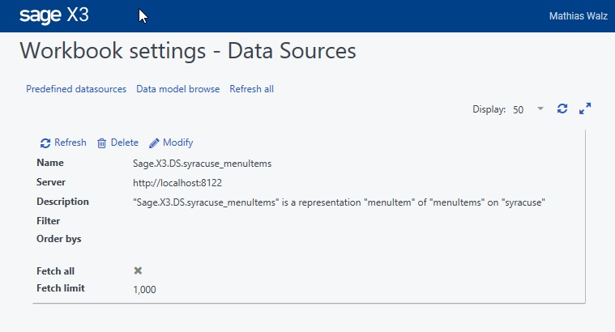
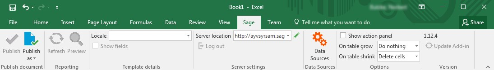
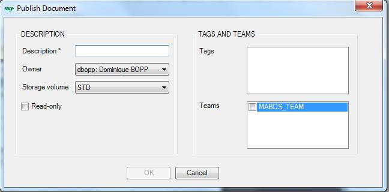
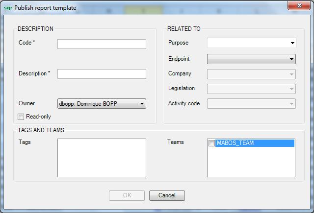
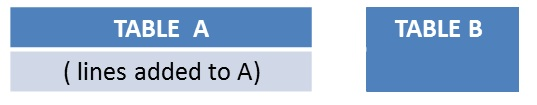
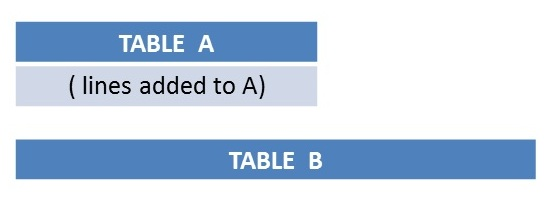

Office client excel
The integration of Microsoft Excel is implemented as an add-in. This is completely different from the integration in version 6. Once the plug-in is installed, Microsoft Excel behaves as a client able to get data exactly like the web client, with the same level of security.
Launching the Microsoft Excel client
When installed, Microsoft Excel connects to the Sage X3 version 7 web platform as follows:
- By launching Microsoft Excel and using the icons in the connection ribbon tab to connect and manually select the data source used to feed the spreadsheet.
- By using a predefined Microsoft Excel link in a page displaying a query or a detail. The connection and the selection of the data source will be done automatically.
- By opening an existing spreadsheet prepared in a previous working session, and reconnecting to refresh the data, to update the table characteristics, or to input additional data.
First connection
When connecting for the first time, a login and a password are required if an Excel link is called from a browser that is not Internet Explorer. A "remember me/ forget me" checkbox is available to allow the login to be valid for 4 weeks, exactly like the description given here.
This button connects to the Sage X3 server and populates the right panel with default links:
- If the link to the Sage X3 web server has not been set up, the ServerSettings window will open first.
- If the authentication has not already been done, a connection window will open (depending on the authentication that has been chosen, the window may be different). You will then have to enter your credentials. On windows, with a default security settings, the screen may appear as shown below:
- If no data source is set up, the Workbook settings window opens the Datasource tab to select at least a data source to insert on the document (it can be closed without selecting a data source). The pop-up menu that can be shown from the right side of the upper bar provides access to three different links.

Buttons in the Sage X3 Ribbon
If the Microsoft Office add-in is installed, an additional tab appears in the Microsoft Excel ribbon and is similar to the following screen:

The options for this ribbon are explained below:
Server settings
This section allows to enter the http address for the Sage X3 version 7 web server, with the following format: http://server:service.
What must be entered is exactly the beginning of the URL you would type in your browser.
The pencil icon on the right side allows you to delete items or reorder them.
When several servers have already been entered, you can select one of those already used by opening the drop down list, or type a new address.
The logout button will bring you back to the login page.
Data sources
This link displays in the same Workbook settings window to select or set up data sources used in the spreadsheet, positioned by default on the Datasources tab.
The following information can be entered in the window:
### Data sources
When at least a data source has been set up, the data sources list appears with their characteristics as shown in this first screen (only the data source has been selected):
Editing or adding a data source enables you to insert data or to change the data already inserted. The insertion starts at the current position of the cursor in the Excel spreadsheet.
The following information must be entered:
- A name.
- The representation and the class.
- The columns used for data sorting.
-
A Fetch all check box to select all the lines. If this check box is cleared, the number of lines to extract is displayed.
The section of the data source can be done either by menu or by entity:- By menu: Select the endpoint and the menu item. It can be a Sage X3 endpoint, that is a folder, or the administration endpoint for accessing the administration data.
- By entity: Select the endpoint first , and then the entity. If the endpoint is a Sage X3 folder, the entity is defined in the class dictionary of the folder.
Select the representation used (the Query facet will be considered).
If the data source has columns in which filtering can be done, the column description appears. By clicking the filter icon, you can select the operator and the values to define the filters, as well as the order by criteria for sorting the data.
The next parameter defines how the data should be extracted. This includes: -
The number of lines to be extracted. All the lines can be extracted by selecting the Fetch all check box or extraction can be limited to a line count (1,000 by default).
- The extraction sorting order. In this grid, several columns of the data source can be added before selecting the ascending or descending order.
Publish
This icon is used to update a document that has already been published on the collaboration space.
Publish as
This icon is used to publish a document on the collaboration space. Two choices are available here:
Publish as Document
This allows to save the Excel document in the storage space.
The information that must be entered is the following:

- A description.
- The code of the user who owns the document. By default, the current user appears.
- The storage volume in which the document is saved. This storage volume must be selected on the list of available storage volumes.
- A Read-Only check box that can be selected. No user can update the document; not even the owner. However, the owner can change the value of the selection to make it writable.
- The upload date will be displayed if the file has already been uploaded (an update will be possible).
- A list of Teams the document is accessible by. The list can be empty (the owner will still have access to the document).
- A list of Tags associated with the document in order to ease the classification. This list can also be empty.
Publish as Template
This allows to save the Excel document in the storage space as a template usable further to create documents.
The information that must be entered is the following:

- A code.
- A description.
- The code of the user who owns the document. By default, the current user appears.
- A Read-Only check box that can be selected. No user can update the document; not even the owner. However, the owner can change the value of the selection to make it writable.
- The upload date will be displayed if the file has already been uploaded (an update will be possible).
- A purpose of the document (can be selected from a drop down list)
- The endpoint used to select company, legislation, activity codes that can be associated to the template to restrict the use of this template for a given company and/or legislation, and to protect it with an activity code.
- A list of Teams the document is accessible by. The list can be empty (the owner will still have access to the document).
- A list of Tags associated with the document in order to ease the classification. This list can also be empty.
Data extraction and refresh
When the data source selection is completed, the data insertion will automatically start on the spreadsheet. You can also refresh the already inserted data by clicking the Refresh icon. Take care that this icon is disabled when the Excel export has been created from a Classic page.
Main principles of data extraction
The main principles of data extraction are the following:
- The client requests for the description of columns are available in the query facet.
- The server returns the prototype describing this data structure.
- The Office client creates the column header.
- The Office client fetches the data in bulk mode.
- The server returns the data by blocks of 1,000 lines.
- A pop-up window displays the progress of the number of integrated lines. The download can be interrupted by clicking the Stop button.
Once the download is done, any modification can be done on the filled spreadsheet as follows:
- Change the table style.
- Insert columns or cells with calculations.
- Delete columns of the table sent by the server.
Option section
The filling policy for the spreadsheet is the following:
- When the data is refreshed, the client takes into account the columns that have been suppressed from the grid, and does not insert them again.
- When the refresh action modifies the data volume, the method the client adds this data can be set up with the On table grow and On table shrink option on the Excel ribbon for the Sage X3 tab:
The choices are the following:
- Shift cells down / Delete cells: The insertion or deletion operations are done only on the columns filled by the table updated.
- Insert lines / Delete lines: The insertion or deletion operations are done on full lines.
- Do nothing: No insertion or deletion will be done. The new grid will replace the previous grid, and the additional lines will be written at the end and might replace cells that have been added. If less lines replace the previous grid, the additional lines will remain with the previous data. The difference between 'Shift Cells' and 'Insert Line' is important only when other information is set on the same Excel tab.
For example: where table 'A' has to be updated by adding lines, and table 'B' with a set of data is present on the tab. This provides the following cases:
|  | Using the Insert line option for adding information to table A would break table B. Shift Cells option is recommended |
 | Using the Shift Cells option for adding information to table A would break table B. Insert Line option is recommended. |
The right panel
This panel displays the current list of data sources and also includes links that can be used instead of the links in the upper panel. It is displayed if the corresponding check box is set in the Options section of the top panel.
Version section
In this section, the current version number is displayed. A link is present to update the plugin when necessary.